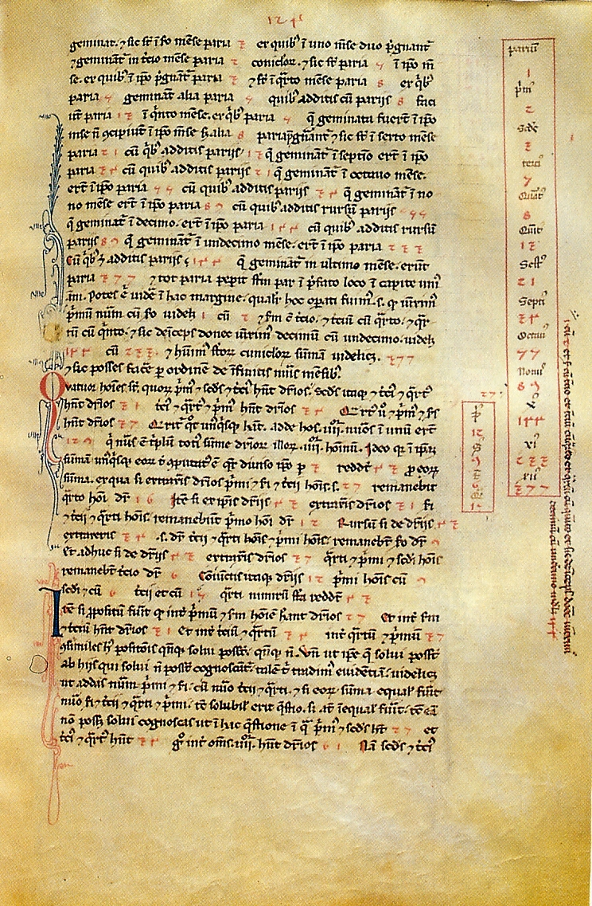

History of Mathematics
20000 BC
15000 BC
10000 BC
5000 BC
4000 BC
3000 BC
2000 BC
1000 BC
900 BC
800 BC
700 BC
600 BC
500 BC
400 BC
300 BC
200 BC
100 BC
0
100
200
300
400
500
600
700
800
900
1000
1100
1200
1300
1400
1500
1550
1600
1650
1700
1750
1800
1825
1850
1875
1900
1925
1950
1975
2000
Λίθινη Εποχή
Εποχή του Χαλκού
Προελληνικά Μαθηματικά
Αρχαία Ελληνικά Μαθηματικά
Ελληνιστική & Ρωμαϊκή περίοδος
Ισλαμικός Χρυσός Αιώνας
Αναγέννηση & Πρώιμη Νεωτερικότητα
Γέννηση της Ανάλυσης
Αυστηροποίηση & Σύγχρονη Άλγεβρα
Θεμέλια των Μαθηματικών
Λογική, Υπολογισιμότητα & Πληροφορική


Κόσκινο του Ερατοσθένη
c.240 π.Χ.
Liber Abaci
1202


Οι γέφυρες του Königsberg
1736